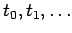

Inhalt Index DeskTop Bronstein

 Wahrscheinlichkeitsrechnung und Mathematische Statistik Wahrscheinlichkeitsrechnung Stochastische Prozesse und stochastische Ketten Grundbegriffe, Markoffsche Ketten
Wahrscheinlichkeitsrechnung und Mathematische Statistik Wahrscheinlichkeitsrechnung Stochastische Prozesse und stochastische Ketten Grundbegriffe, Markoffsche Ketten


Sind bei einem stochastischen Prozeß sowohl der Zustandsraum als auch der Parameterraum diskret, d.h., die Zustandsgröße Xt und der Parameter t können nur endlich viele oder abzählbar unendlich viele Werte annehmen, dann spricht man von einer stochastischen Kette. Bei einer stochastischen Kette können demzufolge sowohl die Zustände als auch die Parameterwerte durchnumeriert werden:
Die Zeitpunkte  müssen nicht äquidistant sein.